Chapter 1: 海洋環境與海岸工程簡介
Table of Contents
- 1. 前言
- 2. 海岸環境
- 3. 海岸工程簡介
- 4. 海岸工程應用範例
- 4.1. 海岸區域示意圖
- 4.2. 海岸區域與常見問題
- 4.3. 實際海岸工程案例簡介
- 4.4. 海岸的剖面
- 4.5. Egmond aan Zee 海岸剖面簡介
- 4.6. Egmond aan Zee 海岸冬季剖面
- 4.7. Egmond aan Zee 海岸夏季剖面
- 4.8. 夏季和冬季海灘剖面的年度變化
- 4.9. 波浪的影響
- 4.10. 波浪的影響趨勢圖
- 4.11. 均勻砂質海岸示意圖
- 4.12. 沿岸輸砂
- 4.13. 均勻海岸的沿岸輸砂
- 4.14. 具有港口防波堤之均勻砂質海岸示意圖
- 4.15. 港口附近的地貌發展
- 4.16. 河口附近的三角洲
- 4.17. 河口附近的三角洲的地貌變化
- 4.18. 正常情況下的水位變化
- 4.19. 暴潮的水位變化
- 4.20. 劇烈暴潮中的沙丘侵蝕和洪水
- 4.21. 開放海域中的大型人工島礁
- 4.22. 大型人工島礁影響海岸穩定性
- 4.23. 大型人工島礁所需土砂的影響
1. 前言
1.1. 海岸孕育人類文明
縱觀歷史，人類廣泛將沿海地區用於許多目的，如捕魚、旅遊、貨物運輸、水處理和居住。 海洋和河流沉積物產生非常肥沃的土地，有益於農業及養殖業的發展。 雖然沿海地區容易受到洪水的侵襲，但大約 30 億人 (世界人口的一半) 在距離海岸線幾百公里範圍內生活和工作。由於沿海地區的人口密度高， 以及其廣泛的基礎設施和產業開發，如發生災難將引致重大的後果。 海岸工程在發展沿海地區和保護海岸和腹地等方面具有重要的作用。
2. 海岸環境
2.1. 典型海灘剖面
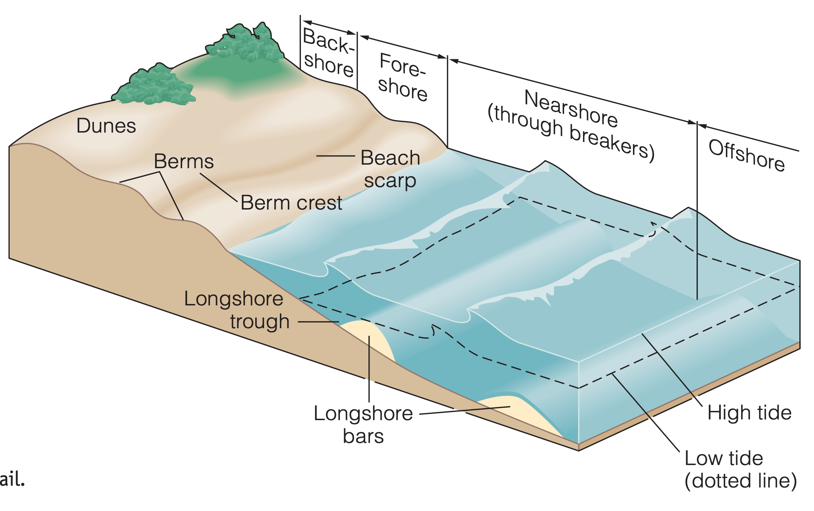
Figure 1: 典型的海灘剖面示意圖 (比例被垂直放大以顯示細節, source: http://academic.cengage.com/earthscience/garrison/essentials)。
2.2. 沿海的陸地多由沙灘組成
世界大部分沿海地區的陸地部分由沙灘組成。在一些地方，海灘上覆蓋著被稱為鵝卵石的粗糙石頭。當波浪和洋流作用相對溫和、且河流提供大量沉積物時，三角洲可能會形成，並出現向海延伸海岸線的總體趨勢。在一些地方，海岸線有斷裂，以產生河口或灣區的入口。河口或灣區入口由河流及潮流所維護。此外，一些海岸的前面可能有陡峭的山壁，這些山壁的趾部上也許會有小型海灘。由於沙灘佔主導地位，並具有非常動態和有趣的特徵，因此這種型別的海 岸線將在此得到最大的重視。
2.3. 海岸的驅動力
波浪是沿海地區的主要活躍現象。大多數出現的都是風產生的波浪。其次是天文潮，主要是太陽和月亮引力所產生的波浪。其他的浪總體來說較為不重要，但對於部分地區可能會有顯著的影響，例如地震誘發的表面波 (海嘯)，以及船舶航行產生的波浪。
風和相關的大氣壓力梯度將產生風暴潮 (storm surge)。當風向岸上方向吹時，沿海岸堆積水。這種水位升高可能產生洪水災害，並讓海浪進一步襲擊內陸海岸。風也會產生沿岸移動的水流。潮汐亦會生成沿岸流，它沿著海岸傳播，並在河口處交替產生漲退潮的水流。此外，風將移動沙子並造成結構性破壞，對於海岸產生直接影響。
3. 海岸工程簡介
3.1. 何謂海岸工程？
海岸工程 (coastal engineering) 是土木工程的一個分支，涉及沿海地區工程的規劃、設計、建設和維護。 海岸工程通常涉及
- 土砂和其他沿海沉積物 (因自然作用力) 的運移和穩定，
- 結構物的建造。
3.2. 常見海岸工程類型
- 第一類措施被稱為 ``軟'' 措施，因為它們利用了天然（軟性）的海岸材料。例如人工育灘、維護疏浚和土地開墾。
- 第二類措施稱為結構或 ``硬'' 措施，可以分為以下幾種型態。
3.3. 海堤 (seawall) 和護岸 (revetment)
位於陸海之交界，與海岸線平行或幾乎平行，目的是防止海岸線進一步後退。 海堤通常是巨大而堅固的，而護岸是帶有岩石護甲或人造建物的沙灘護面。 雖然經常使用，但海堤和護岸的功效一直存在著爭議。
3.4. 海堤範例
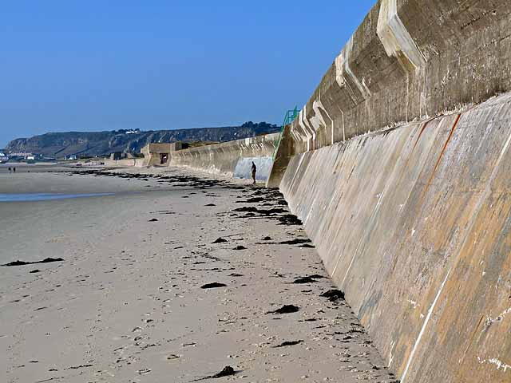
Figure 2: 海堤 (source: https://commons.wikimedia.org)
3.5. 護岸範例
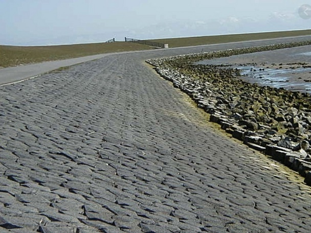
Figure 3: 護岸 (source: http://www.coastalwiki.org)
3.6. 突堤 (或稱丁字壩, Groyne)
垂直於海岸，通常在一般波浪和水位條件下為穿過碎波帶而向外延伸 (碎波帶是靠近海岸的海浪破碎區域)。它們透過從沿海的傳輸系統中捕獲砂子，或保留人工放置的砂來幫助拓寬和保護海灘。
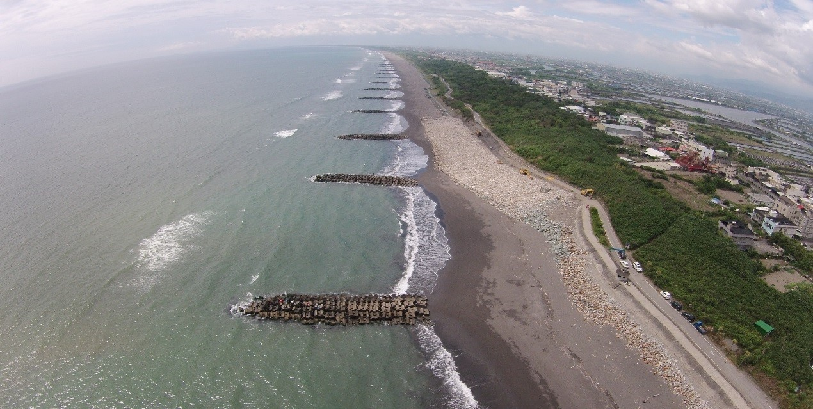
Figure 4: 突堤 (source: https://epaper.wra.gov.tw)
3.7. 導堤 (jetty)
是在河流或潮汐盆地入口處建造的結構，以穩定入口，並保護在入口通道上航行的船隻。
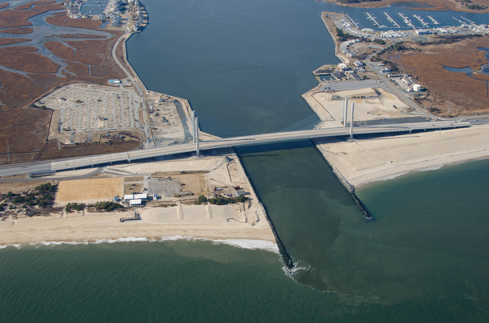
Figure 5: Indian River (Delaware) 的導堤 (source: https://en.wikipedia.org)
3.8. 防波堤 (breakwater) 及其他構造物
- 防波堤主要保護海岸線或港口區域免受海浪攻擊。可以是完全離岸並與海岸平行 (離岸堤)，也可能是傾斜並與海岸相連。 傳統上離岸堤被設計為露出水面的結構，但潛沒式防波堤 (submerged breakwater) 因為可以降低景觀的破壞，現在也已成為一種流行的選擇。
- 其他構造物，如海底管線、離岸風機等等。
3.9. 離岸式防波堤 (offshore breakwater) 範例
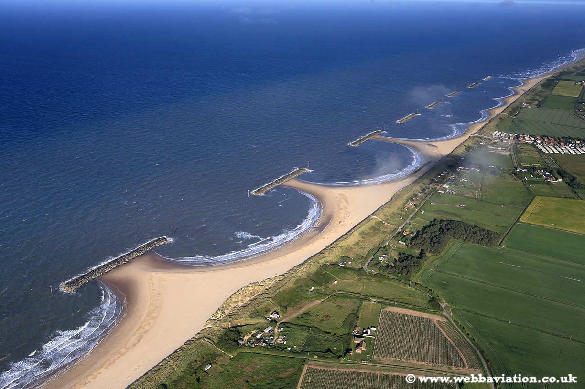
Figure 6: 離岸式防波堤 (source: https://www.webbaviation.co.uk)
3.10. 海岸區域的動力來源
海岸工程是在高度動態和活躍的環境中進行的。沿岸區域的動力來源有：
- 海洋動力（波浪、潮汐、洋流和其他海洋學現象）；
- 陸源動力（如河流出流）；
- 大氣動力（沿海風場和氣候）。
這些力量不僅直接影響到工程規劃中的 ``軟'' 或 ``硬'' 措施，而且還永久改變了沿海系統的物理形狀和結構。 海岸的外形被稱為海岸形態學 (coastal morphology)，包含了海灘的沙丘以及海床的地形等等。當外部力量發生變化時，沿海地形將跟著變化。 外力的變化可能是自然原因，也可能是人為的。
3.11. 外力條件變化
外力條件變化的例子有：
- 因暴風雨導致海岸的高浪和水堆積 (湧浪, surge)；
- 海平面上升的長期趨勢；
- 因港口建造導致鄰近海岸受波浪影響的條件改變；
- 因在河流中建造了水壩，剝奪了沿海沉積物的供應系統。
海岸區域的變化發生在各種時間尺度上。海岸工程師和管理人員大多對 1 年到（幾）百年的時間尺度，以及風暴導致沙丘侵蝕和洪水等重大影響事件感興趣。
4. 海岸工程應用範例
4.1. 海岸區域示意圖
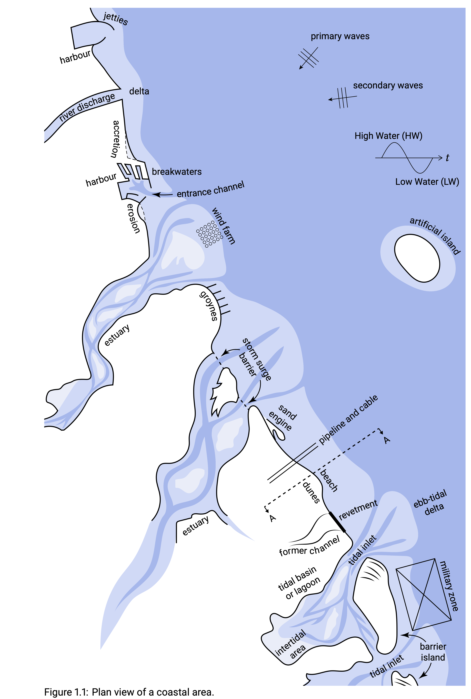
4.2. 海岸區域與常見問題
從海邊看，河口是海洋的手臂，推入河口和河流的下游處，一直延伸到潮汐到達的終點。 河口從河流中獲得淡水，從海洋中獲得鹽水。潟湖 (lagoon) 則缺少如河流一般的淡水輸入來源。 這些潮汐系統在沿海地區的沉積物收支中發揮著關鍵作用，因此影響了海岸的長期演變。 而在持續延伸的海岸線上，波浪是主要的外力來源。
圖中的海岸線從河流接收沉積物，並被稱為潮汐或沿岸通道 (tidal or coastal inlets) 的開口所攔截。 潮汐入口這個名字指的是潮汐對入口的維持是很重要的。
4.3. 實際海岸工程案例簡介
本節將簡要介紹一些實際的海岸工程案例，例如
- 海岸的剖面 (圖中的 A-A 斷面)；
- 港口附近的地形發展；
- 河口附近的三角洲；
- 強烈風暴潮期間的沙丘侵蝕；
- 開放海域中的大型人工島。
4.4. 海岸的剖面
荷蘭北荷蘭省北海沿岸 Egmond aan Zee 地區之海岸橫截面（跨岸剖面）的形狀。
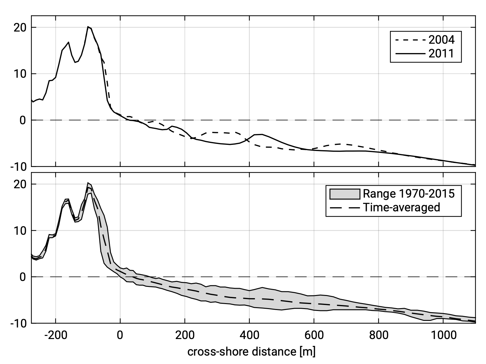
4.5. Egmond aan Zee 海岸剖面簡介
沙丘、海灘和所謂的海岸面的一部分的坡度有所不同。 沙丘表面的實際斜率為 1:3 至 1:4。海灘的坡度從沙丘腳（1:20）附近的海灘上部向大海下降；在水線附近，斜坡約為 1:50。在岸邊有一些海堤構造物。距離水線的距離越遠，平均底坡度會變平。在圖中的向海端 (水深：MSL -10 m)，坡度約為 1:125。MSL 意指 mean sea level, 即平均海平面。
海床由沙質材料組成，在離岸更遠的地方通常粒徑更細。沙質海岸的一般粒徑尺寸為 \(D_{50}= 200~\mathrm{\mu m}\)；其中 1.5 億個顆粒可裝入 1 升的體積。
4.6. Egmond aan Zee 海岸冬季剖面
在風暴期間，大浪和長浪會侵蝕海灘。 這種沉積物沉積在碎波帶（波浪破裂的區域）。因此，典型的風暴剖面有一個狹窄的海灘和相對平坦的坡度。 季節性在北半球尤為明顯，北半球在冬季會遇到大量風暴。因此，風暴剖面通常也被稱為冬季剖面。 在暴風雨期間，高水位也會導致沙丘侵蝕和洪水。
4.7. Egmond aan Zee 海岸夏季剖面
在夏天，沙子被較低水位和較短的波浪向海灘和沙丘移動。這種沉積物的跨岸運輸導致海岸線振盪 (下頁圖)，但原則上海岸線的平均位置不會改變。只有在沉積物的大量結構性損失或增加的情況下，海岸線的平均位置才會發生變化；當沙子在近海峽谷或沿岸方向消失時，可能會發生結構侵蝕。
4.8. 夏季和冬季海灘剖面的年度變化
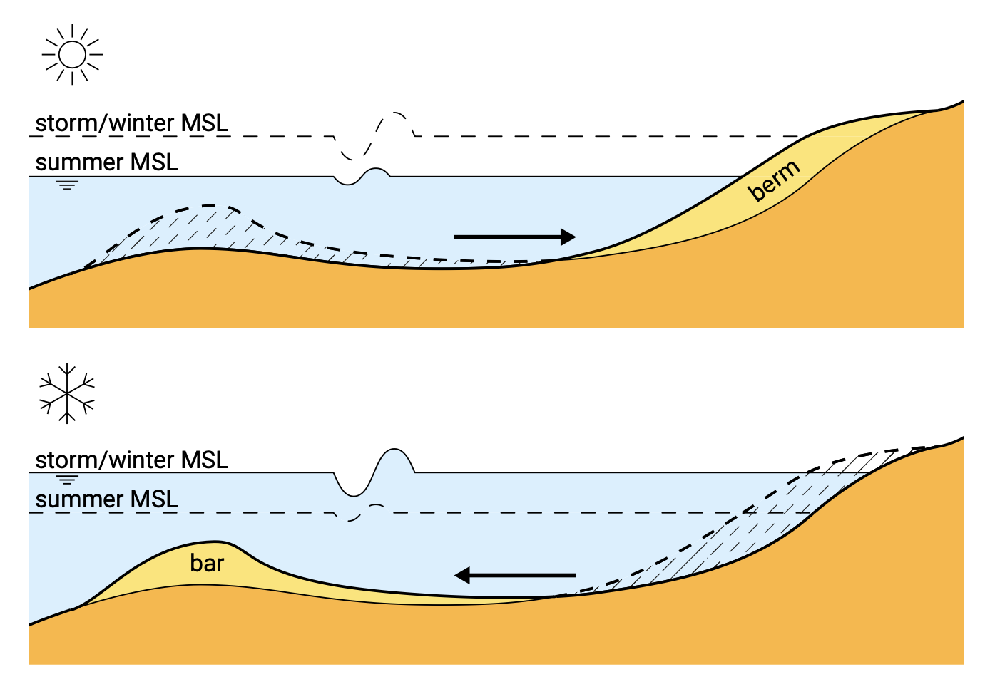
4.9. 波浪的影響
下頁圖 (上) 中的波浪高度顯示，當海浪接近水線時波高會逐漸減少。這是由於 (部分) 碎波和底部摩擦導致的能量耗散。
下頁圖 (下) 為海底附近水粒子速度的最大水平分量，顯示出相當大的量值 (在許多位置大於 \(1.0~ \mathrm{m/s})\)。注意 \(D_{50} = 200~\mathrm{\mu m}\) 的顆粒在均勻流動中的起動臨界速度約為 \(0.2~\mathrm{m/s}\), 可以理解圖中的波浪能夠激起沿岸剖面中的許多底床顆粒。碎波產生的紊流將有效地使這些顆粒離開底床，而波浪和潮汐產生的海流可以接續輸送這些粒子。這些動力現象均會在後續的章節中介紹。
4.10. 波浪的影響趨勢圖

Figure 7: 沿海岸剖面之波高與水粒子速度變化趨勢。
4.11. 均勻砂質海岸示意圖
均勻意味著假設等水深線是直線和平行的。波浪斜向接近海岸，即波峰和等水深線之間有一個非零夾角。當波浪接近海岸時，由於折射，此角度將變小。
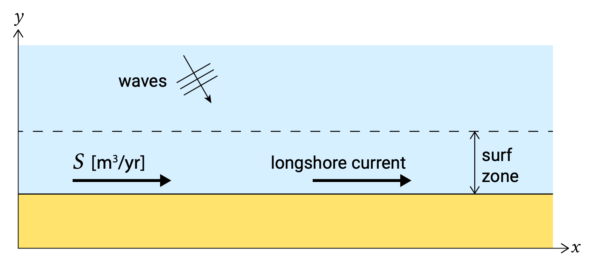
4.12. 沿岸輸砂
在碎波帶內 (以及其外一點之處)，沉積物沿著海岸運輸，即所謂的沿岸輸砂。波浪不斷攪動底床上的材質，接著這些沉積物被沿岸流輸送。這種海流是由碎波區傾斜入射波的破碎產生的。由於波浪在攪拌底質方面的作用，\(1~\mathrm{m/s}\) 的沿岸流之輸砂比相同大小的河川水流有效得多。
4.13. 均勻海岸的沿岸輸砂
如果海岸是均勻的，沿岸的沉積物運輸量 \(S\) 是恆定的，故海岸保持穩定。只有當進入該段的沉積物量與離開該段的沉積物量不同時，意即當沿岸運輸率有梯度時，此海岸段才會發生變化。如果傳輸方向出現正梯度，就會發生侵蝕（沿岸的沉積物運輸量增加，因此離開的沉積物比進入的沉積物還多）。在傳輸方向出現負梯度的情況下，就會發生淤積。沿岸的均勻運輸（無梯度）不會改變海岸。
4.14. 具有港口防波堤之均勻砂質海岸示意圖
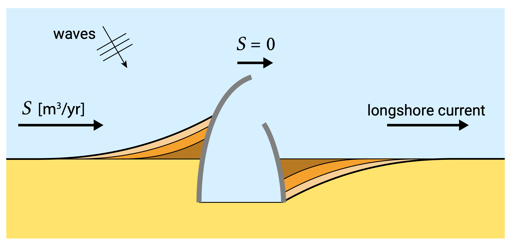
4.15. 港口附近的地貌發展
如果沿著均勻的砂質海岸，在兩個相當長的防波堤中建造了一個港口，比碎波帶的寬度要長得多，沿岸沉積物運輸將中斷。假設防波堤向海方向不會發生沉積物遷移。在港口的上行一側，將發生沙子的積累（負傳輸梯度）；在下漂移側（背風側）將發生侵蝕（由於正傳輸梯度）。
4.16. 河口附近的三角洲
假設波浪接近垂直於 (初始) 海岸線。這條河向大海流入水量 \(Q_{r}~\mathrm{m^{3}/s}\)；同時沉積物由河流輸送；比如 \(S_{r}~\mathrm{m^{3}/yr}\)。\(S_{r}\) 以 \(\mathrm{m^{3}/yr}\) 表示，是因為我們正在檢視長時間的地貌變化時間尺度。
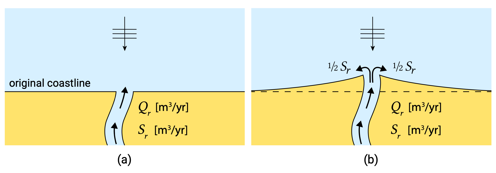
4.17. 河口附近的三角洲的地貌變化
- 河川是沿海系統的沉積物來源。當河流沉積物對海岸的供應速度快於沿岸的潮汐和海浪造成的沉積物分散時，就會形成如此清晰的三角洲海岸線。
- 三角洲海岸線的穩定性非常依賴於河流沉積物的供應。如果沉積物供應因修建水壩、採沙或灌溉計劃等而被切斷或減少，該系統將被剝奪定期的沉積物供應。
- 這導致河口兩側的海岸線侵蝕，在當今三角洲海岸線非常常見。
4.18. 正常情況下的水位變化
在正常情況下，水位會因垂直潮汐變化而變化，並存在因波浪而導致的較短的變化。由於水位和波浪特徵（波高、週期和波浪方向）的變化，跨岸沉積物傳輸率（和跨岸傳輸梯度）的大小和方向不斷變化。
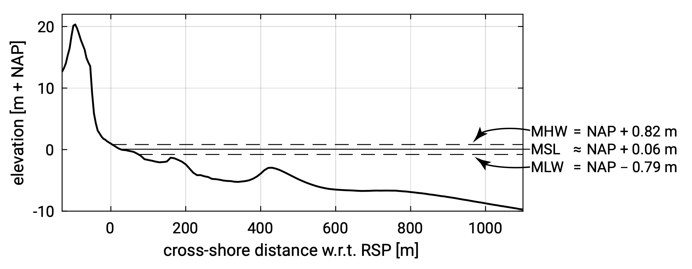
Figure 8: Egmond aan Zee 地區的瞬時（2011 年夏季）跨岸剖面圖。
4.19. 暴潮的水位變化
此圖為 2020 年 3 月風暴期間荷蘭之 Vlissingen 地區的測量和預測水位。兩者之間的區別即為暴潮的效應（下圖）。暴潮效應持續僅兩天。
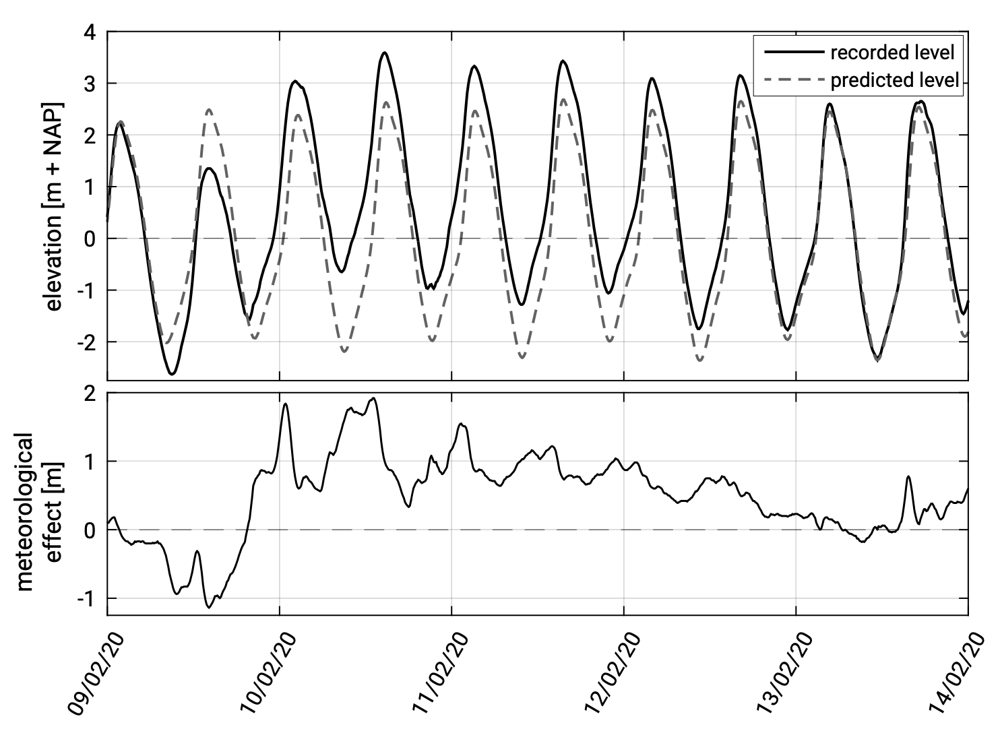
4.20. 劇烈暴潮中的沙丘侵蝕和洪水
此圖顯示出在最大風暴潮條件下的跨岸剖面變化。 SWL 不僅高得多，也存在更高的波浪。SWL 甚至超過了沙丘趾部的水準；當水面與海浪衝擊了沙丘，所有的海灘都消失了。
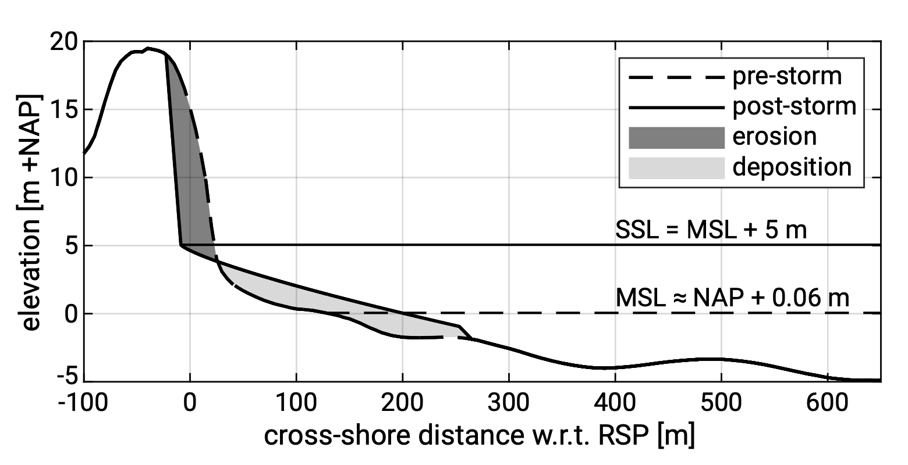
4.21. 開放海域中的大型人工島礁
- 在荷蘭，一直在討論在 IJmuiden 附近海岸外建造一個人工島來容納史基浦機場的擴建是否有用。
- 一個特定的機場島需要相當大的尺寸（例如跑道的長度）。 這樣一個島嶼的典型尺寸是 5 公里。
- 關於島嶼與現有海岸的距離，必須考慮到運輸要求、噪音限制和形態影響，找到最佳值。
4.22. 大型人工島礁影響海岸穩定性
- 海洋中的人工島嶼對現有海岸具有很大的形態影響，並影響廣闊地區海岸的穩定性。
- 在島嶼後面的遮蔽區，波浪特徵將從根本上發生改變。
- 另一個方面是島嶼附近的潮汐型態將受到影響。
- 現有沿海地區的適應時間通常相對較長。
4.23. 大型人工島礁所需土砂的影響
- IJmuiden 海岸可能建造島嶼處的水深約為 15 m。由於這種深度、島嶼尺寸以及所需 MSL 以上的高度 (約 5 m)，建造這樣一個島嶼需要巨大的砂量（6 億立方米的砂子等）。
- 這些土砂很容易從北海的底床材料中獲得，但需要大型開挖，這也會影響地貌形態。
- 在挖掘作業中，細粒淤泥也將被擾動，因為在海底的沙子沉積物中經常出現少量的淤泥（例如 2%）。
- 這將導致 1200 萬立方米的淤泥在北海環境中被擾動。相關的濁度 (turbidity) 可能會產生巨大的生態影響。